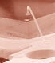
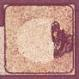
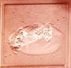
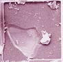
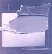

Bond Lifting
Bond
lifting
refers to any of several phenomena in which a wire bond that connects
the device to the outside world becomes detached from its position,
resulting in loss or degradation of electrical and mechanical connection
between that bond and its bonding site.
In this
context, a bond may be one that attaches to a bond pad of the die (also
referred to as the first bond) or one that attaches to a lead or post of
the package (also referred to as the second bond). First bonds are
usually in the form of gold ball bonds or aluminum wedge bonds, while
second bonds are usually gold or aluminum crescent bonds (also known as
'fishtail' bonds).
Ball bond
lifting,
or simply ball lifting, is the detachment of a ball bond from the bond
pad of a semiconductor device. It can be due to a variety of factors.
Poor wire bond equipment set-up and bond pad surface contamination are
primary causes of ball lifting. Poor set-up includes improper wirebond
parameter settings, unstable workpiece holders, and worn-out wirebonding
tools. These result in poor initial welding and inadequate
intermetallic formation between the bond pad and the ball.
Ball lifting
can also be due to contaminants on the bond pad, which act as barriers
between the ball and the bond pad. Common contaminants that inhibit
good bonding include unetched glass, unremoved photoresist, and Si saw
dust. Resin bleed-out from the die attach material can also impede good
bonding and result in ball lifting. Halides such as Cl on the bond pad
can trigger corrosion, which is again another source of ball lifting.
A disturbed
or uneven bond pad surface also inhibits bonding. Excessive probe
digging results in aluminum heaps and an exposed substrate or barrier
metal area, which prevent good intermetallic formation.
Silicon nodules
on the surface of bond pads can also result in poor ball bonding.
|

|
  |
|
Fig 1.
Photo of a lifted ball bond |
Fig 2.
Photos of bond pads w/ contamination that prevented good
intermetallics and led to ball lifting |
Lifted balls
may also result from excessive interdiffusion between the bond pad and
ball bond metals. Kirkendall voiding, which is the formation of voids
underneath the ball bond due to excessive diffusion of Al from the bond
pad to the Au ball bond to form purple plague, is an example of this
mechanism. The reflow of thermoplastic die attach material at the
bonding temperature also results in ball lifting, because it allows
movement of the die during the thermosonic bonding itself.
Cratering, which is considered to be a
different failure mechanism, can also manifest as a lifted ball, with
the Si underneath the bond pad coming off with the bond. Excessive
probing and overbonding are common causes of cratering. Similarly, bond
pad peel-off, or the mechanism wherein the bond pad metal peels off from
the barrier metal or substrate, can result in ball lifting.
|
 |
 |
|
Fig 3.
Photo of a bond pad crater |
Fig 4.
Photo of a bond pad metal peel-off that led to ball lifting |
Wedge lifting
is the detachment of a wedge bond from the bond pad or bonding post, or
the crescent bond from the leadframe bonding finger. Like ball lifting,
it can be due to a variety of factors, primarily poor wirebonder set-up
and bond pad surface contamination. Poor set-up includes improper
parameter settings, unstable workpiece holders, and worn-out tools.
These result in poor bonding between the bond pad, post, or finger and
the wedge.
Wedge lifting
can also be due to contaminants on the bond pad, post, or bonding
finger. Contaminants act as barriers between the wedge and the bonding
area. Common contaminants that inhibit good bonding include unetched
glass, unremoved photoresist, and Si saw dust. Halides such as Cl on the
bond pad can also trigger corrosion, which is another cause of wedge
lifting. Silicon nodules on the surface of bond pads with no barrier
metallization underneath can also result in poor ball bonding.
Sub-bond pad
cratering, which is considered to be a different failure mechanism, can
also manifest as a lifted wedge, with the Si underneath the bond pad
coming off with the bond. Similarly, bond pad peel-off from the barrier
metal can result in wedge lifting. Wedge lifting due to metallization
peeloff from the bonding post and fingers are likewise possible.
Studies have also shown that excessive probing damage on the bond pad
can cause wedge lifting.
See
also:
Wirebonding;
Common Causes of Wirebonding Failures; Ball Lifting FA
Flow; Package
Failures; Failure Analysis;
Reliability Models
HOME
Copyright
© 2005
EESemi.com.
All Rights Reserved.